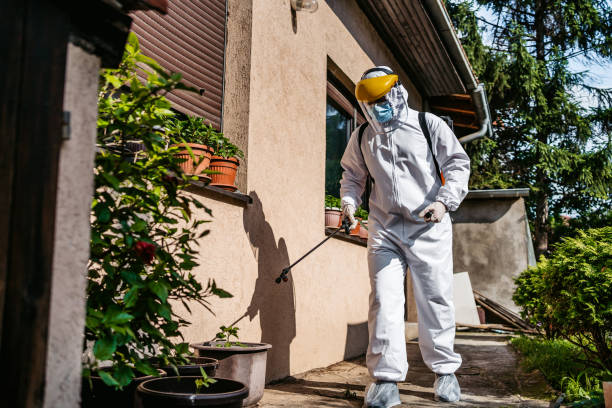

Unlock the Key to a Bug-Free Home with These Must-Know Tips for Seattle Residents
Posted by on 2024-06-05
Keeping your home free of bugs and pests is essential for maintaining a comfortable living environment. As Seattle residents, we are no strangers to the challenges that come with keeping these unwanted visitors at bay. However, with the right knowledge and strategies in place, you can unlock the key to a bug-free home.
One of the most important steps in preventing bugs from entering your home is to keep it clean and clutter-free. Bugs are attracted to food crumbs, spills, and clutter that provide hiding spots for them to thrive. By regularly cleaning your home and eliminating any potential food sources, you can significantly reduce the likelihood of an infestation.
In addition to cleanliness, sealing up entry points is crucial in preventing bugs from making their way inside. This includes sealing cracks and crevices around windows, doors, and foundation walls where bugs can easily enter. Installing screens on windows and doors can also help keep insects out while still allowing fresh air to flow into your home.
Another effective tip for keeping bugs at bay is to properly store food items in airtight containers. Bugs such as ants and pantry moths are attracted to exposed food items, so by storing them securely, you can prevent these pests from invading your kitchen.
Regularly inspecting your home for signs of bug activity is also important in catching infestations early on. Look out for droppings, shed skins, or visible bugs themselves as indicators that you may have a problem that needs addressing.
Lastly, if you find yourself dealing with a persistent bug problem despite taking preventative measures, don't hesitate to seek professional help. Pest control experts have the knowledge and tools necessary to effectively eliminate pests from your home and prevent future infestations.
By following these must-know tips for Seattle residents, you can unlock the key to a bug-free home and enjoy a comfortable living space all year round. Remember that prevention is key when it comes to keeping bugs at bay, so stay vigilant and proactive in maintaining a pest-free environment.